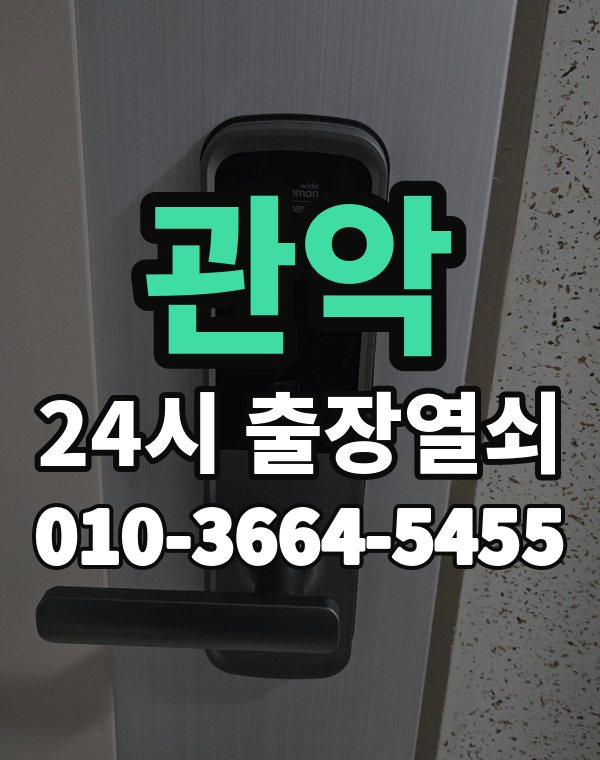

관악 출장 다니며 보는 동네
관악구는 봉천동 아파트와 신림동 원룸, 다세대가 아주 많은 동네입니다.
혼자 사는 분이 많아 비밀번호 분실과 열쇠 분실 연락이 잦습니다.

관악구 출장 가는 동네
- 봉천동
- 신림동
- 남현동
봉천동 출장열쇠, 신림동 열쇠집처럼 동네 이름으로 찾으셨어도 같은 곳입니다.
적혀 있지 않은 동네도 관악구 안이면 다 갑니다.
관악 출장 작업 종류
관악 출장 부르실 때
신림동 원룸촌은 건물이 비슷해 건물 이름과 층수를 꼭 알려주세요.
늦은 밤에도 전화 받습니다.
서울대입구역, 신림역, 봉천역, 낙성대역 근처라고 말씀해 주셔도 위치 잡기가 쉬워집니다.
가까운 역이나 큰 건물, 단지 이름을 같이 알려주세요.
- 정확한 주소, 아파트라면 동과 호수
- 번호판 상태 (꺼짐, 켜짐, 경고음)
- 거주 확인용 신분증이나 주소 나온 우편물
전화부터 작업까지 순서는 이용안내에 적어 두었습니다.
관악 출장열쇠 관련 글
- 서울 관악 봉천동 가족이 바꾼 도어락 비밀번호를 몰라 못 들어갈 때 해결 흐름
- 관악구 봉천동 문 열기 전에 신분 확인을 하는 이유와 미리 챙겨 둘 것
- 관악구 봉천동 세입자와 집주인이 도어락 고장을 두고 정리할 때 짚어 볼 점
- 관악구 봉천동 상가와 사무실 출입문 도어락이 막혔을 때 영업 전에 챙길 체크리스트
- 관악구 남현동 현관문이 끝까지 안 닫힌다면 도어클로저와 경첩부터 보세요
- 서울 관악 남현동 장마 습기와 겨울 결로에 도어락이 오락가락할 때 점검 포인트
- 관악구 남현동 열쇠가 안 돌아가거나 꽂힌 채 안 빠질 때 힘 빼고 푸는 요령
- 서울 관악 남현동 열쇠를 잃어버렸거나 문을 잠그고 나왔을 때 순서대로 할 일
- 서울 관악 신림동 베란다 미닫이와 방문 잠금장치가 말썽일 때 살펴볼 곳
- 관악구 신림동 택배 받으러 나갔다가 원룸 문이 잠겼다면 이렇게 움직이세요
- 관악구 신림동 현관문 닫을 때 쿵 소리와 삐걱임을 줄이는 방법
- 서울 관악 신림동 다세대 공동 출입문과 철문이 안 열릴 때 어느 문 문제인지 가려내는 법
관악 출장열쇠 자주 묻는 질문
관악구 끝쪽 동네도 오시나요?
봉천동, 신림동, 남현동 등 관악구 전 지역 갑니다. 적혀 있지 않은 동네도 관악구 안이면 출동합니다.
관악 늦은 시간 출장도 되나요?
시간 상관없이 출동합니다. 주소를 받으면 도착 시간부터 알려드립니다.
끝내 못 열면 돈은 어떻게 되나요?
못 열면 비용은 받지 않습니다. 비용은 작업 전에 먼저 말씀드리고, 괜찮다고 하시면 시작합니다.
본인 확인은 어떻게 하나요?
사시는 분인지 신분증, 주소가 나온 우편물, 관리사무소 확인 중 하나로 확인한 뒤 엽니다.
관악에서 도어락 고장도 봐주시나요?
네, 수리와 설치, 교체 모두 합니다. 고쳐서 쓸 수 있으면 고치는 쪽을 먼저 말씀드립니다.